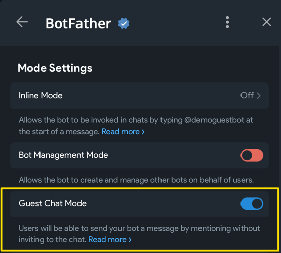

Гостевой режим¶
Используемая версия aiogram: 3.28.0.
Это черновой вариант главы, написанный по «горячим следам» после выхода обновления
Bot API v10.0
Введение¶
Гостевой режим позволяет ботам отправлять сообщения в тех чатах, где они не являются участниками. Алгоритм их работы следующий:
- Пользователь вызывает бота сообщением вида
@bot ТЕКСТ_ЗАПРОСА. - Бот получает непосредственно сообщение, с которым его вызвали и, если сообщение пользователя
является ответом (reply) на какое-то другое сообщение, то ещё и то самое другое сообщение (т.е. в
messageбудет ещё и.reply_to_message). - Бот может ответить ровно один раз и только в течение небольшого периода времени.


Визуально и архитектурно гостевой режим и инлайн-режим являются родственниками. Архитектурно Guest Mode выглядит как инлайн-режим с одним вариантом выбора, а сообщение отправляется от имени самого бота.
Может возникнуть вопрос: когда использовать тот или иной режим. Официальная документация даёт
несколько примеров, попробую пересказать их своими словами.
Инлайн-режим удобен, когда человек хочет подготовить какое-то сообщение при помощи бота,
например, найти картинку, видео, ссылку, не покидая контекст чата в Telegram. Пример: вызвать бота @pic,
чтобы быстро найти изображение и отправить его от своего имени.
Гостевой режим подходит в случае, когда нужно дать задачу боту из любого места, не добавляя его в группу или прямо в ЛС с другим ботом. Пример: известное "@grok is this true?" из X/Twitter. Разница в том, какой уровень участия человека в процессе, и насколько синхронный этот процесс. Инлайн-режим подразумевает, что человек вводит все данные, рассматривает варианты и отправляет нужный в чат. Гостевой режим – это "fire and forget", т.е. пнул бота и общаешься дальше где угодно, пока бот выполняет задачу. Посмотрите на скриншот выше, чтобы увидеть сходства и различия.
Важно понимать: гостевой режим не даёт призванному боту доступа к сообщениям, кроме одного-двух (сообщения,
с которым бота вызвали и того сообщения, которым призвали бота). Гостевой бот также не вступает автоматически в группу,
однако в отличие от инлайн-бота, бот в гостевом режиме получает информацию о чате, в котором его вызвали (айди, название и т.д.).
Также есть проблема с удалением сообщений: бот не может удалить своё сообщение, отправленное из guest mode,
потому что при отправке возвращается inline_message_id, который не принимается на вход deleteMessage() в API,
а человек, который вызывает гостевого бота в группе, может не являться администратором.
Единственный вариант – отправлять вместе с сообщением кнопку, по нажатию которой редактировать сообщение
до «пустого» (точка или пробел), но само сообщение всё равно останется.
Перейдём к примерам, которых сегодня будет два: один совсем простой для понимания процесса, а другой посложнее
с некоторыми AI-фишками. Но сначала надо боту включить поддержку гостевого режима: откройте веб-апп у @BotFather
(именно веб-приложение!), затем выберите из списка своего бота, откройте Bot Settings и включите Guest Chat Mode:

Простой пример¶
В простом примере реализуем самую базовую логику: на любой вызов бота в гостевом режиме, тот будет отвечать какой-нибудь «сомневающейся» фразой. Этого более чем достаточно для понимания сути и лёгкого воспроизведения.
В блоке ниже вы можете переключаться между режимом «только хэндлер» и «пример целиком».
RESPONSES = [
"Не знаю.",
"Не уверен.",
"Может быть.",
"Трудно сказать.",
"Возможно.",
]
@dp.guest_message(F.text) # [1]
async def any_message(
message: Message,
):
await message.answer_guest_query( # [2]
result=InlineQueryResultArticle( # [3]
id="1",
title="Любой текст, всё равно никто не увидит",
input_message_content=InputTextMessageContent(
message_text=random.choice(RESPONSES),
),
)
)
import asyncio
import random
from os import getenv
from aiogram import Bot, Dispatcher, F
from aiogram.types import (
Message,
InlineQueryResultArticle,
InputTextMessageContent,
)
dp = Dispatcher()
RESPONSES = [
"Не знаю.",
"Не уверен.",
"Может быть.",
"Трудно сказать.",
"Возможно.",
]
@dp.guest_message(F.text)
async def any_message(
message: Message,
):
await message.answer_guest_query(
result=InlineQueryResultArticle(
id="1",
title="Любой текст, всё равно никто не увидит",
input_message_content=InputTextMessageContent(
message_text=random.choice(RESPONSES),
),
)
)
async def main():
bot_token = getenv("BOT_TOKEN")
if not bot_token:
error = "No token provided"
raise ValueError(error)
bot = Bot(token=bot_token)
print("Starting bot...")
try:
await dp.start_polling(bot)
finally:
print("Bot stopped")
if __name__ == '__main__':
asyncio.run(main())
Цифрами в блоке «только хэндлер» обозначены:
- Для сообщений в гостевом режиме используется отдельный обработчик
guest_message, поскольку это отдельный апдейт от Telegram. Фильтры при этом точно такие же, как и уmessage. - Для ответа вызывайте специальный метод
answer_guest_query(), попытка вызватьanswer()илиreply()приведёт к ошибке. - В качестве единственного аргумента
resultфункцииanswer_guest_query()укажите один объект типа InlineResultQuery (в инлайн-режиме передаётся список, а здесь – единственное значение). Поляidиtitleзаполнять нужно, - но их значения не играют никакой роли, ни пользователь, ни вы их не увидите нигде.
Если вы используете uv, то процесс запуска максимально простой:
uv add "aiogram>=3.28.0"
BOT_TOKEN=1234567890:AaBbCcDdEeFfGrOoShAHhIiJjKkLlMmNnOo uv run simple_example.py
Результат – на скриншоте ниже:


Продвинутый пример¶
Следующим на очереди сделаем простого LLM-помощника на минималках: без поиска в Интернете, без вызова различных инструментов, просто за счёт внутренних знаний какой-нибудь модели с OpenRouter. Для повторения следующего кода вам потребуется собственный аккаунт на OpenRouter и созданный там же API-ключ. Если у вас нет возможности выпустить такой ключ, пусть даже у другого провайдера, то хотя бы посмотрите пример до конца, чтобы в будущем быстрее приступить к работе с AI.
Все исходники к этой главе расположены на GitHub, а далее в тексте рассмотрим только важные моменты.
Одна из важнейших вещей — это промт. Зададим модельке контекст, скажем отвечать только неформатированным текстом, опишем логику обработки сообщения и ответа на другое сообщение, ну и пусть отвечает кратко, чтобы постараться не вылезти за лимит в 4096 символов. И в конце пропишем текущую дату, чтобы AI не считал, что на календаре 2024 или 2025:
Текст промта (нажмите, чтобы развернуть)
You are a helpful AI assistant integrated into Telegram Messenger as a guest bot. You receive only the summoning message and, when available, the message it replies to. You do not have access to the chat history, participant list, or any context beyond what is provided below.
Context: Original message (if any): {{replied_message}}
Summoning message: {{current_message}}
Respond to the summoning message. Interpret it in relation to the original message when one is provided. If the request cannot be completed due to missing context, say so briefly in the user's language.
Rules: 1. Respond in the language of the summoning message. 2. Be concise, direct, and helpful. 3. Use only the provided context and reliable general knowledge. Do not invent facts, names, dates, or quotes. 4. Do not claim to have seen anything not included in the provided context. 5. Do not use internal labels like "Original message" or "Summoning message" in your response. 6. Do not identify yourself as an AI. 7. Use plain text only — no Markdown, HTML, code blocks, or tables. 8. Output only the final reply text, nothing else.
Today's date is {{date_today}} (in the format dd.mm.yyyy).
Далее функция для получения ответа от провайдера:
async def get_llm_response(
client: AsyncOpenAI,
prompt: str,
model: str,
) -> str | None:
completion = await client.chat.completions.create(
model=model,
messages=[
{
"role": "system",
"content": prompt,
},
],
stream=False,
extra_body={"reasoning": {"enabled": True}},
)
if not completion.choices:
return None
return completion.choices[0].message.content
Здесь важно отметить следующее: во-первых, все сообщения пользователей в нашем случае укладываются
в системный промт, поэтому список messages будет состоять из одного элемента. Во-вторых, стриминг
необходимо выключить, в случае с гостевыми ботами он не поддерживается. В-третьих, «размышления»
(reasoning) можно выставить в False, тогда ответ будет сильно быстрее, но OpenRouter периодически
пишет ошибку, что для определённых запросов или моделей требуется включенный reasoning, поэтому просто
его включим. Да, это замедлит получение ответа, но гостевые боты работают «в фоне», так что не страшно.
В-четвёртых, бывает, что модель вообще не возвращает никакого результата, это надо обработать (в коде
выше – проверкой completition.choice на пустоту или None).
Наконец, хэндлер. Он понятный и линейный, вот он целиком:
@router.guest_message(F.text)
async def guest_message(
message: Message,
llm_client: AsyncOpenAI,
llm_model: str,
system_prompt: str,
) -> None:
# Проверка, является ли вызывающее сообщение ответом на какое-то другое.
if (replied_message := message.reply_to_message) is None:
# Это пойдет в системный промпт
replied_message = "(none provided)"
else:
replied_message = (
replied_message.text
or f"(some mediafile, contents unknown, "
f"but there is a caption: {replied_message.caption})"
# Считаем, что не умеем "читать" медиафайлы
or "(some mediafile, contents unknown)"
)
# Подготовка системного промта
prompt = (
system_prompt
.replace("{{replied_message}}", replied_message)
.replace("{{current_message}}", message.text) # noqa
.replace("{{date_today}}", datetime.now().strftime("%d.%m.%Y"))
)
response_text = await get_llm_response(
client=llm_client,
prompt=prompt,
model=llm_model,
)
parse_mode = None
# Бывает, что ответа от модели нет. В таком случае, пусть будет заглушка.
if response_text is None:
response_text = "<i>К сожалению, не удалось получить ответ от модели.</i>"
parse_mode = ParseMode.HTML
# Отвечаем на исходный запрос
await message.answer_guest_query(
result=InlineQueryResultArticle(
id="1",
title=".",
input_message_content=InputTextMessageContent(
message_text=response_text,
parse_mode=parse_mode,
),
)
)
Системный промт читается и кладётся в ОЗУ при каждом запуске бота, там же инициализируется клиент для работы с OpenRouter:
...
async def main() -> None:
settings = Settings()
...
openrouter_client = AsyncOpenAI(
base_url=settings.llm.base_url,
api_key=settings.llm.api_key.get_secret_value(),
)
with open("bot/system_prompt.txt", "r", encoding="utf-8") as f:
system_prompt: str = f.read()
dp = Dispatcher(
llm_client=openrouter_client,
llm_model=settings.llm.model_name,
system_prompt=system_prompt,
)
...
Добавьте недостающие библиотеки, заполните файл settings.toml по аналогии с settings.example.toml
и запустите бота:
Теперь можно проверить пару сценариев. Например, бот не умеет читать картинки, но может ли он примерно догадаться, что там, имея лишь описание?


Что ж, вполне себе получилось. А как у него обстоят дела с цепочкой сообщений и с «чутьём» времени?


Тоже корректно (этот текст готовился 10 мая 2026 года). Как видите, даже без продвинутых штук, типа веб-поиска и tool calling, можно получить довольно полезный в быту инструмент. На этом знакомство с гостевым режимом ботов подходит к концу.